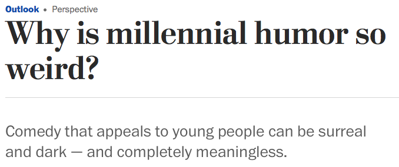

“The poor people of the world! They are ensnared in a web of Bad Culture, which warps their minds, and forces them to care about stupid harmful arbitrary things that only damage them. If only we had Good Culture! If only they could be freed! Then they would care about important and healthy things, which are of course the things that I care about.”
I watched the first of the David Chappelle specials on Netflix and it brought something into pretty sharp focus for me: the entire concept of ‘punching up’ is part of why the Discourse is so bad.
Like, I don’t know how many of you are old enough to remember Chappelle’s Show when it first aired. I was in high school at the time, and it was beloved. White kids liked it, black kids liked it, everybody liked it. I’m sure people would find it problematic as hell these days–the usual suspects are picking over those Netflix specials because he does those ‘crosses the line twice’ jokes that you’re not supposed to do these days. But I think why it worked then was why it worked for so many comedians before him who were popular across racial and gender lines, and that is that he made fun of everybody.
You couldn’t complain that you were being picked on or singled out, because everyone got hit. There was even self-deprecatory humor where he made fun of things about men or black people or straight people that he found silly. So the only problem you could have was if you wanted no one to ever make fun of your people, and obviously that wouldn’t be fair, since everyone else’s people were getting made fun of too. It’s almost like equality or something.
So there was a bit of ‘all in good fun’ humor to it. He didn’t mean anything personal by joking about this group or that, just that something struck him as funny. If there was criticism, it was of institutions, not people. So he’d make fun of racism itself by pointing out how stupid it was that, theoretically, someone like Clayton Bigsby could hate a group that they unknowingly were a part of. Not saying white people are stupid or black people are stupid, just that being racist is stupid.
But now with this ‘punching up’ idea, you’re only allowed to joke about people who you deem morally inferior, so the very fact that you’re joking about someone is a moral judgment, no matter what the joke is. And I think that’s contributed so much to how people have less of a sense of humor nowadays and they’re more easily offended, because the internet’s decided that there can’t be good-natured ribbing, there can only be either ‘punching up’ or ‘punching down’*. Even if you’re joking about something as inane as white people being bad at dancing or black people liking fried chicken, the connotation is “you have it too good and I’m taking you down a peg.” Instead of just “I thought up a joke that I thought was funny.”
(*Which is ridiculous in the first place, because it requires a ‘sorting algorithm of oppression’. Like who’s more oppressed, white women or black men? Is a white woman allowed to make fun of a black rapper who writes misogynistic lyrics? You tell me.)
“But now with this ‘punching up’ idea, you’re only allowed to joke about people who you deem morally inferior, so the very fact that you’re joking about someone is a moral judgment, no matter what the joke is.”
Oh my lord. Someone articulated the thing.
I felt much safer when people were allowed to joke about horrible shit, and always felt like the people who said “that’s your privilege talking” were unaware of precisely how much horrible shit I have personally experienced, but I could never say why their rules seemed nastier than some cutting jokes.
And that’s it. That’s exactly it. If I’m joking about rape I might be saying victims are bad… but I might be saying perpetrators are bad, or saying why do things that might well not last long at all give us PTSD forever wow it sucks, or…
But if I joke about a privileged group because they are a privileged group, I ACTUALLY AM saying those people are bad, that is, being cruel rather than maybe just being absurdist.
I am emphatically, gratefully in agreement with all of this.
It’s worth mentioning the flip side, though, the reason that we were expelled from the Paradise Garden of Good-Natured Roast Comedy and thrown into the Wasteland of Discourse…
…which is plausible deniability for cruelty.
Also known as “geez, man, can’t you take a joke?”
Which is, of course, what bullies will say when anyone tries to confront them about their bullying, assuming that they’re allowed to say it.
And so if a given group of people feels like it’s being bullied beyond what it can tolerate – and it gets the power to enforce its social will – it’s going to say “nope, we can’t take a joke, you’re not allowed to joke about us, that’s automatically an Abomination.”
(I have some sense that, in the evolution of such movements, there’s often a brief moment when the Bearers of Received Wisdom are more intent on being fair and even-handed, and they try to deal with this thinly-veiled-bullying problem by proclaiming that no one is ever allowed to joke about anyone. But of course this doesn’t get even a little bit of traction; it definitely doesn’t appeal to the movementarian masses, who love telling mean jokes about hated enemies as much as everyone else does; and so you end up with hollow-hearted distinctions like “punching up.”)
I don’t think there’s a way to square this circle. I think the best answer is the old late-20th-century answer, the one that says “everyone is allowed to tell good-natured jokes about everyone,” and the price you pay is that assholes are going to use this as license to tell jokes that aren’t so good-natured. We’ve seen the price of the Other Path, and it isn’t worth it. But…I wish there were a better plan.
I agree with the description of the trade-off here but completely disagree with the assessment.
“Plausible deniability for cruelty” gave us /pol/ and arguably Trump.
Social justice norms gave us…

abstraction. Nobody actually punches up - we make jokes that broadly can’t be construed as punching anybody, and frankly I’m fine with that. Social justice “ruined” humour like photography ruined painting - forcing its practitioners to abandon an obsolete paradigm that had reached its limits long ago and explore the vast range of formal and expressive possibilities they had been leaving untouched
Yeah, I’m not buying this.
There is, of course, plenty of “surreal dark abstract” millennial humor. Also plenty of popular pre-millennial humor in that vein. It wasn’t the millennials who gave us The Hitchhiker’s Guide to the Galaxy, or Monty Python and the Holy Grail, or Firesign Theater sketches, or (hell) Alice in Wonderland.
And on the flip side, well, it’s just flat untrue that “nobody punches” within the world of social justice norms. That world has as much low-to-middlebrow “have you seen how members of $DESPISED_GROUP do $THING?!?” humor as, well, every other large group of humans that has ever existed. And, no, it’s not just Comedy Central and SNL comedians – although those things have huge millennial followings, you can’t just discount them without a hefty dose of No True Scotsman-ing – it’s every snarky post on SA and Tumblr about mediocre white men, every unflattering neckbeard cartoon.
The mechanisms of humor haven’t changed so much since the halcyon days of Dave Chappelle. In some ways, they haven’t changed so much since Gilgamesh ruled in Uruk.
What’s changed, mostly, is who the targets are supposed to be, and (even more importantly) how the Social Rules expect you to respond. You used to have to Be Cool; you used to have to smile and laugh when someone told a joke at your expense, even if it was killing you inside; you used to lose a lot of status by popping the Humor Bubble, by pushing back in any way other than the semi-mythical Wittily Giving As Good As You Got. Now…now you’re allowed, and even expected, to get offended. That’s supposed to apply only to some groups of people, but such a wildly inconsistent norm can’t be maintained, so you get the balkanization that we’ve gotten.
It turns out that it’s really not better, although I can see why people would have hoped that it might be.
I watched the first of the David Chappelle specials on Netflix and it brought something into pretty sharp focus for me: the entire concept of ‘punching up’ is part of why the Discourse is so bad.
Like, I don’t know how many of you are old enough to remember Chappelle’s Show when it first aired. I was in high school at the time, and it was beloved. White kids liked it, black kids liked it, everybody liked it. I’m sure people would find it problematic as hell these days–the usual suspects are picking over those Netflix specials because he does those ‘crosses the line twice’ jokes that you’re not supposed to do these days. But I think why it worked then was why it worked for so many comedians before him who were popular across racial and gender lines, and that is that he made fun of everybody.
You couldn’t complain that you were being picked on or singled out, because everyone got hit. There was even self-deprecatory humor where he made fun of things about men or black people or straight people that he found silly. So the only problem you could have was if you wanted no one to ever make fun of your people, and obviously that wouldn’t be fair, since everyone else’s people were getting made fun of too. It’s almost like equality or something.
So there was a bit of ‘all in good fun’ humor to it. He didn’t mean anything personal by joking about this group or that, just that something struck him as funny. If there was criticism, it was of institutions, not people. So he’d make fun of racism itself by pointing out how stupid it was that, theoretically, someone like Clayton Bigsby could hate a group that they unknowingly were a part of. Not saying white people are stupid or black people are stupid, just that being racist is stupid.
But now with this ‘punching up’ idea, you’re only allowed to joke about people who you deem morally inferior, so the very fact that you’re joking about someone is a moral judgment, no matter what the joke is. And I think that’s contributed so much to how people have less of a sense of humor nowadays and they’re more easily offended, because the internet’s decided that there can’t be good-natured ribbing, there can only be either ‘punching up’ or ‘punching down’*. Even if you’re joking about something as inane as white people being bad at dancing or black people liking fried chicken, the connotation is “you have it too good and I’m taking you down a peg.” Instead of just “I thought up a joke that I thought was funny.”
(*Which is ridiculous in the first place, because it requires a ‘sorting algorithm of oppression’. Like who’s more oppressed, white women or black men? Is a white woman allowed to make fun of a black rapper who writes misogynistic lyrics? You tell me.)
“But now with this ‘punching up’ idea, you’re only allowed to joke about people who you deem morally inferior, so the very fact that you’re joking about someone is a moral judgment, no matter what the joke is.”
Oh my lord. Someone articulated the thing.
I felt much safer when people were allowed to joke about horrible shit, and always felt like the people who said “that’s your privilege talking” were unaware of precisely how much horrible shit I have personally experienced, but I could never say why their rules seemed nastier than some cutting jokes.
And that’s it. That’s exactly it. If I’m joking about rape I might be saying victims are bad… but I might be saying perpetrators are bad, or saying why do things that might well not last long at all give us PTSD forever wow it sucks, or…
But if I joke about a privileged group because they are a privileged group, I ACTUALLY AM saying those people are bad, that is, being cruel rather than maybe just being absurdist.
I am emphatically, gratefully in agreement with all of this.
It’s worth mentioning the flip side, though, the reason that we were expelled from the Paradise Garden of Good-Natured Roast Comedy and thrown into the Wasteland of Discourse…
…which is plausible deniability for cruelty.
Also known as “geez, man, can’t you take a joke?”
Which is, of course, what bullies will say when anyone tries to confront them about their bullying, assuming that they’re allowed to say it.
And so if a given group of people feels like it’s being bullied beyond what it can tolerate – and it gets the power to enforce its social will – it’s going to say “nope, we can’t take a joke, you’re not allowed to joke about us, that’s automatically an Abomination.”
(I have some sense that, in the evolution of such movements, there’s often a brief moment when the Bearers of Received Wisdom are more intent on being fair and even-handed, and they try to deal with this thinly-veiled-bullying problem by proclaiming that no one is ever allowed to joke about anyone. But of course this doesn’t get even a little bit of traction; it definitely doesn’t appeal to the movementarian masses, who love telling mean jokes about hated enemies as much as everyone else does; and so you end up with hollow-hearted distinctions like “punching up.”)
I don’t think there’s a way to square this circle. I think the best answer is the old late-20th-century answer, the one that says “everyone is allowed to tell good-natured jokes about everyone,” and the price you pay is that assholes are going to use this as license to tell jokes that aren’t so good-natured. We’ve seen the price of the Other Path, and it isn’t worth it. But…I wish there were a better plan.
Terry Pratchett borrowed from Wicca to put witches in groups of three: maiden, mother, and crone (with Granny Weatherwax capable of playing all three roles by herself in a pinch, if no one else is available).
A common pattern for boys – or should we say lads – is also to travel in groups of three: leader, follower, and mascot. The leader is charismatic and sets the tone for the group; he’s typically an asshole but hopefully a good-natured one. The follower wishes he was the leader but lacks the confidence, so he’s always one step behind, egging things on. He may be passive-aggressive instead of brash, and think of himself as the much ballyhooed Nice Guy. The mascot is smaller, less threatening, and more likeable. His diminutive stature has made him the butt of jokes and potentially target of bullying since childhood, which he compensates for with chirpy good humour and unexpected violent rage.
The Lonely Island - Andy Samberg is the leader - Akiva Schaffer is the follower - Jorma Taccone is the mascot
Top Gear UK - Jeremy Clarkson is the leader - James May is the follower - Richard Hammond is the mascot
O-Zone - Dan Bălan is the leader - Arsenie Todiraș is the follower - Radu Sîrbu is the mascot - (the Romanian group that sung the Numa Numa song, sheesh)
Three Amigos - Chevy Chase is the leader - Steve Martin is the follower (wait, or the other way around?) - Martin Short is the mascot
The Ringbearers - Frodo Baggins is the leader - Sam Gamgee is the follower - Gollum is the mascot
Hrm. This runs counter to a different social theory / mapping scheme I’ve heard, which conforms much more closely to both the fictional and lived evidence at my disposal.
This is the Bushman hunting party theory. It’s one of these Obviously Crackpot Things propounded only by Obvious Crackpots, but…on the level of pure demonstration it holds up surprisingly well.
The basic components of the theory are:
(A) Left to their own devices, boys and men will commonly and naturally form themselves into groups of four.
(B) These “Bushman hunting party” groups-of-four have their own specialized roles, into which the boys or men will naturally sort themselves:
* The leader is what he sounds like. He makes decisions for the group, represents it to the outside world, and resolves conflicts. He has the highest status.
* The master hunter focuses on excellence in the group’s main activity (hunting for an actual hunting party, music for a band, Geek Knowledge for a gang of high school nerds, etc.). He has less social competence and clout than the leader, and maintains his niche through technical competence. There is very likely to be some degree of tension between him and the leader, since everyone knows that he’s the most plausible alternative.
* The shaman focuses on abilities orthogonal to the group’s main activity; he’s a specialist of some sort, serving as a repository of knowledge and (sometimes) a channel to a higher power. Doesn’t have the chops to make a bid for leadership, but gets by through a focus on valued things that the others don’t do at all. Often serves as the group’s moral guardian.
* The joker has the lowest status and, to the extent that the group has a butt monkey, will be the butt monkey. Keeps his place, and placates the others, through endearing humor. Has some amount of “court jester” license to speak uncomfortable truths, since he presents the least threat. If there is a problem with the health of the group, you will probably see it in him first – either he’ll be abused beyond reason, as the others seek an outlet for their troubles, or he’ll start turning his humor against his friends, or both.
[Supposedly this four-man structure is alien to women, who more naturally sort themselves into threes and fives. I dunno, man.]
…obviously this is all kind of silly, and to the extent that there’s any reality to it at all, the analysis has to start with “all kinds of social things can and do happen all the time, we’re trying to gauge prevalences.”
Off the top of my head, a short list of all-male quartets (real and fictional) whose members obviously map very easily to the Bushman hunting party roles:
* The Beatles
* The Four Seasons
* KISS
* The Ninja Turtles
* …I guess at this juncture I have to mention the Street Sharks
* The “Three Musketeers” (including d’Artagnan)
* The Marauders
* The Ghostbusters
* The Final Fantasy XV party
* The pilgrims in Journey to the West
* The main cast of The Book of Skulls
* The A-Team
* …the four hobbits in the Fellowship only sorta work, but they do sorta work
I feel like my feelings about “weird EA” are hopelessly biased by the fact that Brian Tomasik is a great person
I genuinely think the whole “do fundamental particles suffer” thing is a reasonable line of thought. I think I might be hopelessly biased by the fact that all the counter arguments I’ve seen* have just been bald-faced absurdity bias. (I really wanted to make a scathing comment about the quality of the arguments but I’m trying to follow through on my commitment to not engage in satire.)
* Not all the counter arguments I can imagine, mind you.
I don’t know if you think my blogging today has qualified as bald-faced absurdity bias, but it is and does reflect my basic objection to that sort of argumentation. I can’t speak for shlevy, but I suspect the point of his original post was also to respond to speciically this sort of thing.
I decided to go find the actual article rather than joking summaries, and I found this post. And it goes so completely off the rails in the introduction, in the first paragraph, and in fact in the first sentence that it seems hard to engage with productively.
The very first sentence of the argument is:
In order to reduce suffering, we have to decide which things can suffer and how much.
And by that point he’s already made the mistake I’ve been criticizing. He’s lost the plot. He has:
Decided the purpose of ethics is to reduce suffering.
Detached that decision from the reason he came to that conclusion in the first place—he’s left it as an unmoored axiom.
He now starts worrying about whether that axiom might apply to things he hadn’t thought of originally.
But when he does decide that it has radically different implications, his response is to throw away his original goals and run with the crazy axiom, rather than using that feedback to modify or restrict the scope of his axiom.
This is exactly the process I was criticizing in the other numbered list I put in a post today. (At least I’m apparently consistent in my criticism).
Like, my fundamental response to that essay is to ask Brian Tomasik: “Why do you care about suffering?” There’s the tautological answer, which is “I think suffering is bad.” And if that’s the only answer, then there’s no way to argue with that but there’s also not terribly much content.
But realistically, people get their feeling that suffering is bad from somewhere. And Tomasik knows this, and points to it in sentence number two (don’t worry, I’m stopping here, not going sentence by sentence through the entire piece):
Suffering by humans and animals tugs our heartstrings and is morally urgent, but we also have an obligation to make sure that we’re not overlooking negative subjective experiences in other places.
I would rewrite the first half of that sentence a bit, into “Suffering by humans and animals tugs our heartstrings, and is [therefore] morally urgent.” We feel that suffering is bad because when we see other people suffer, that makes us sad. We think it’s a bad thing. We want to make it stop. And therefore we value reducing suffering.
But when I see a mosquito suffering, I don’t feel bad. (Except insofar as it’s suffering, and therefore not dead, and dead mosquitos are far preferable to live ones). I don’t feel good, either. I don’t care. I don’t even know what mosquito suffering looks like!
And most people don’t. Most people don’t have any objections to mosquitoes dying, or video game characters losing lives, or to two protons repelling from each other. And most of the people who do get upset by those things are people who have trained themselves to do so, through the sort of confused quasi-argument that I have been critiquing.
And this is the reason I find this sort of logical slide truly objectionable, rather than amusing. This argument takes things that are perfectly harmless, gets people to become upset by them, so that they generate actual suffering in actual people. I want people, and especially the people I like, to be happy. I am not pleased when people find more ways to make them sad.
When you start with “I don’t like it when my friends are unhappy”, try to formalize that, and wind up with “but it’s even worse when electrons are forced to be near each other”, you have lost something. Your model is not matching the thing you’re trying to model. Your axioms don’t generate the system you were envisioning. Your delivered product does not meet the design specs. You have fucked up.
Ozy says that Brian Tomasik is a lovely person. I have never met him, but I genuinely 100% believe that. I would like him to be happy, and so I wish he would not follow confused arguments to give himself more sources of stress.
I think you’re missing the case for trying to rationalify our moral intuitions beyond just “what tugs at my heartstrings”.
If I watched a movie about a cute kid who was starving in Sudan, it would tug at my heartstrings and I would want to help the kid.
In fact, I haven’t watched this movie, and I haven’t thought about the famine in Sudan in months.
I could take a really immediate/self-regarding view of ethics, where the whole point of ethics is to make myself happy. In that case, maybe if I saw the movie, I would donate to help the particular kid in the movie, but no other kid, and my heartstrings would feel better, and so there would be no problem. Maybe I would even just avoid seeing the movie, since I know it would make me want to give away money (which, since my heartstrings are currently untugged, seems to present-me like a waste). Maybe I would give away money to the cute kids in Sudan (who tug at my heartstrings) but not to non-cute kids (who don’t).
But if I think morality is about anything other than making my conscience shut up, it seems like I should accept some common-sense axioms. Like “even though cute kids tug at your heartstrings, and non-cute kids don’t, probably cuteness shouldn’t determine worthiness of help”. Or “just because they made a movie about only one kid, doesn’t mean that the other kids don’t matter and wouldn’t be just as sympathetic if you saw movies about them”. These seem kind of like basic logical actions: “well, there’s no real difference between Movie Kid and other kids, and I don’t endorse treating equivalent people differently for no reason, so I guess I’ll care about all the kids.”
I feel like if you don’t think you should apply basic logical actions to your moral system, and you endorse morality just being “making my conscience shut up about this specific incident”, then you’re at LEAST as morally weird as people who worry about insect suffering.
But if you do apply basic logical actions to your morality, then you get a slippery slope question of which logical actions to take and which ones not to. If you try do all the actions and be logically consistent, you end up as Brian Tomasik.
So I guess I’m positing a trilemma, one branch of which you have to take:
1. Agree that morality is just about placating your random desires, to the point where, if you want to help a cute kid in a movie, it’s almost nonsensical to ask whether that implies you should help identical but less cute kids who weren’t in movies.
2. Accept that morality is subject to the normal rules of logic, but then make a cowardly retreat from this as soon as it becomes inconvenient.
3. Become Brian Tomasik.
All of these options seem about equally unappealing to me, so I think I try to be an awkward three-footed mutant with one foot in each bin.
First of all, I would never want to be read as implying that I’m not incredibly morally weird. There’s a reason Nietzschean Übermensch narratives have a lot of resonance for me. (“Those who write new values on new tablets, etc.”) But I think your trilemma is wildly overstated.
This is partly repeating the post I made while you were presumably writing this one, so apologies for that.
My ethics are about making me happy and satisfied with myself. Because that’s all that ethics can be, because there is no God and there is no great judge. My ethics are an answer to the question “what do I want to do?”
But of course I have things I want other than “to get the biggest possible dopamine hit in the next thirty seconds.” I want to be the sort of person I want to be. I want to be happy with the decisions I’ve made. And because of {mumble about biology and evolution} a lot of what I want is for other people to be happy and healthy and free.
I like people. I want them to be happy. And thus my ethics call for me to do things that make other people happy.
A big ingredient of this is some sort of reflective equilibrium. Once you have preferences about the sort of person you are, that imposes some consistency constraits, and this is where I’m slightly repetitive. If I feel an urge to help “that” toddler, but also feel like I don’t want to be the person who only helps toddlers who happen to be shoved in my face, then I might respond accordingly, by helping some other toddlers instead.
I, personally, want to be the sort of person who doesn’t respond to emotionally manipulative pleas at all, but does take calculated and optimized approaches to achieving things effectively. And this is why I’m fundamentally sympathetic to/supportive of groups like GiveWell.
But a reflective equilibrium is reflective and it’s an equilibrium. It’s reflective because there’s a feedback loop. You have an initial set of values, and then you take steps to harmonize them. And that changes things subtlely, or sometimes not-so-subtlely. (Leaving aside situations where you actually change your mind for other reasons).
But at every step of this reflection you need to connect back to your actual grounding. And eventually you settle down to where all these things are relatively consistent, and then you have a stable equilibrium to work from.
I feel like what happens with Tomasik–like arguments is a loss of that reflective grounding. Rather than having a feedback loop from intuitions to principles to intuitions to principles, he has a straight chain from intuitions to principles and then discards the intuitions like a booster rocket. And that lets his new principles get really divorced from where they started out.
This process is totally internally consistent. But if you just want to be internally consistent, that’s easy. You can be internally consistent and believe anything. (Arguably, you can even be internally consistent while believing two contradictory things, as long as you also believe, like the tortoise, that believing two contradictory things is not a contradiction).
Internal consistency and reflective equilibrium don’t demand that you abandon your foundations.
You call the slide from “normal morality” to “Brian Tomasik” a slippery slope. I see it more as a jagged terrain with a bunch of awkward obstacles that Tomasik seems determined to vault.
I see why people want to extend the logic of “don’t kill people” to “don’t kill chickens either”. I disagree, but I see the pull of it, because most people actually do care about whether, say, animals are suffering in front of them. There’s a coherent reason to use the word “suffer” to describe humans in pain and also puppies in pain.
Once you extend that to insects, though, you’re stretching the word beyond what people actually care about. You’re making the Worst Argument in the World, and saying “this thing is like that thing in one way, and thus this thing is bad like that thing is.” And Tomasik keeps making that move, from animals to insects to video game characters to subatomic particles. There is no reason to do that.
I guess maybe the short version is this. I don’t think that applying logic to your ethical code is a bad thing. But I think people have a bad habit of generating a principle, equivocating on the definitions of the words in that principle, and thus getting a new principle out of it that is basically unrelated in any reasonable way to where they started.
And that’s why I want to talk about grounding your feedback loop in the intuitions and values you started with. It protects you from this sort of equivocation and linguistic trickery.
And this is a fundamental problem of model-building in general. You build a model. You extrapolate. You get a lot of interesting conclusions. And then you go back, and you check to make sure that in the situations where you know the answer, your model gives you the right one. If it doesn’t, that means your model is broken. Not that the world is.
…I suspect that this boils down to “most EA-types (and indeed most humans) believe in something much closer to moral realism than you do.”
Even the most hardcore preference utilitarian will generally hew to some abstract idea like “morality = satisfying preferences = good in the world,” rather than a more personal one like “I support satisfying preferences because this tickles my self-conception.” Many EA-types report experiencing a really visceral horror and pain at the idea that any entities are suffering, as the output of a hyperactive imagination/empathic faculty, which is clearly not being processed through any kind of self-image-processing mental module. All this bespeaks a certain desire to find the “moral facts” [which may be mostly unknown] and act on them, rather than using morality in the way you describe, as something like a tool in the toolkit of self-definition.
Which is not crazy or surprising, when you realize how much EA culture generally is steeped in the concept of progress. Rationalism generally tends to take a stance of “the present is wildly different from the past, even the near future is going to be wildly different from the present, we need to ride on top of that onrushing change rather than letting it flatten us.” And, in terms of socially-defined morality, it’s been widely and correctly noted that we have in fact seen change that looks a lot like a technological-progress curve over the course of the past several centuries. Much of morality used to be [SHIT MOST OF US DON’T CARE ABOUT AT ALL RIGHT NOW], but we gradually started acting on the twin ideas that are “people’s lives shouldn’t be awful” and “more and more entities should be treated as morally equivalent.” Now we’ve gotten to the point where racism and sexism and straight-up contempt for the poor will give rise to nigh-universal censure, where we’re actually engaging seriously with ideas like UBI and trans acceptance and animal suffering mattering, and all of this looks like it’s just a continuation of the curve – like we’re (ahem) “making progress,” like we’re expanding moral technology in the way that we’ve expanded actual technology. Seen through that lens, the desire to “get ahead of the curve” and to know as many of the facts-that-will-be-discovered as soon as you can is eminently understandable.
All that said, I’m pretty much on your side here in terms of metaethics. Which should not be a surprise, given the extent to which my worldview revolves around the creation and maintenance of narratives. (Something something, hem hem poke poke.)
I do think you’re underselling the extent to which, for a given (weird) person, hewing to his desired self-conception can allow and require him to “fly off the rails.” I assume it matters vastly more to Brian Tomasik that he be someone who cares about all suffering in all its conceivable forms than that he avoid being shackled to the strictures of a weird morality.
(I myself can cop to a much-less-extensive version of this. I am not a hedonic utilitarian, and I am willing not to care at all about the suffering of entities that do not “think” by my fairly-rigorous standards, which is why e.g. I am not especially incensed about factory farms. But I do care about creating a decent existence* for all thinking beings, and that stance is actually pretty damn important to me, important enough that the right facts might cause it to overthrow major aspects of my life that are ultimately less important than it is. If it were demonstrated to me that chickens were capable of abstract reflective thought, that the existence of a chicken language and chicken literature had been hidden from me, Doing Something about factory farming would zoom up to become one of the central priorities of my life – even though I would, all else being equal, much rather exist as my current self than as an anti-factory-farming crusader who doesn’t get to enjoy eating delicious chicken. At some point, your reflective feedback loop doesn’t actually tell you to stop.)
* also defined in non-strictly-hedonic terms, for those who care
Programmatic values inculcation, and moral education of any kind, are totally futile in the age of the Internet because children in their formative years cannot be prevented from seeing for themselves how adults actually think and talk.
if you’ve really got a brainboner for “white” culture there’s nothing stopping you from participating in any number of activities related to language, music, dance, religion, stories, martial arts, food, historical reenactment; these are all perfectly valid and in fact often celebrated, not something that gets you sent to the gulag.
not white qua white–since that’s one thing the CRT people get right, whiteness itself is basically just defined by white supremacy, there’s no there there (it is, as TUOC says, a category error)
it’s the members of the whiteness coalition who have the language, music, etc. Celebrating whiteness qua whiteness actually is not gonna be celebrated, because that pretty much will take the form of pure distilled racism. And the people who say they’re not allowed to do that–well, they’re not wrong, but there’s a reason they’re not allowed to do it. They basically want to just be racist for the sake of being racist and it’s like, no
whiteness itself is basically just defined by white supremacy, there’s no there there
I used to believe this. I really don’t, anymore. I don’t even think it’s viably coherent.
I mean, on a totally practical level, where you don’t care about things like “conceptual consistency” or “true understanding” so much as you care about “who is likely to be a horrible jerk”…yeah, it’s not a bad rule-of-thumb. For historical reasons if nothing else, the people who care about whiteness-as-a-construct are overwhelmingly unlikely to have anything useful to contribute, and you’re probably happier not engaging with them.
But assuming that we’re actually trying to get things right –
At this stage in American cultural development, “whiteness” is heavily defined by the pressures imposed by outside agency, which is closely analogous to the thing that happened with “blackness” (and for that matter “Indian-ness”) centuries before.
We abducted a polyethnic, polyglot collection of people from many different African cultures, and told them “it doesn’t matter how you think of yourselves, in our eyes you are simply Black, and that is going to define how we treat you.” And in response…they formed a new identity, shaped to deal with the new social facts that were facing them. We’ve accepted that, to this day. It would be unconscionable to do otherwise.
And by now we’ve spent a while telling white people “it doesn’t matter how you think of yourself, you are White, and that is going to define how we treat you; you have privilege, you have unearned tyrannical power, and even if you don’t perceive or appreciate this it is so.” Trying to say “I don’t identify as white, I’m Italian/Jewish/poor Southern trash/fill-in-the-blank-here” will not get any traction, it will get you branded as a clown or an oppressor or both.
How can we then turn around and say “but you’re not allowed to care about this identity with which you’ve been ineradicably stamped, or find any value in it?”
I feel enormous sympathy for anyone whose response to “whiteness is about white supremacy” is “fuck you, you don’t get to dictate the terms of my identity, you’d cry holy hell if I did that to you.”
OK, members of the Great Cultural Juggernaut, it’s time to stop prancing around and actually decide: are you strong or are you weak?
If you’re strong, that’s great, good on you for acknowledging your power, but (as the scriptures say) with great power comes great responsibility. You have the responsibility not to use your power to be awful to people – any people at all, no really I mean it, because no one person has anything like the power level of a strong cultural movement. You have the responsibility to do what it takes to achieve actual good outcomes in the world. You have the responsibility to stop bitching about how you’re morally owed recompense for being unable to claim what you want for yourselves.
If you’re weak, that’s also OK, good on you for acknowledging your frailty, the world is full of dread powers that overshadow us all. But it means that you’d have to be really, really stupid to advocate for policies that favor the strong over the weak. It means that you should support rules and protections. It means that, whenever things descend to the level of the war-of-all-against-all where might makes right, you should expect to losehard.
This thing where you go around with the swagger of a schoolyard bully, and then you’re somehow always surprised when people don’t think of you as the sympathetic underdog, is not working. It is not getting you any of the things you want, and it is dragging the rest of us down into Sheol in the bargain.
I wanna make a longer version of this post later but…
Those sentiments about how ~happiness is in the small things uwu~ is really disheartening. Because while those things do exist, there’s also quite a bit of misery in the small things: getting stuck in traffic on your way to work, mosquito bites, the common cold, interpersonal drama, etc. And on top of that there are a shit ton of ways for humans to be absolutely, unimaginably miserable which have no equivalent in the realm of happiness. There’s no opposite to the holocaust, or to sexual assault, or to being kept in Guantanamo Bay for decades. I don’t get how people can honestly think that existence is net positive.
So, uh, this is tangent to the things with which I’m obsessed. And I’m inclined to agree with you as regards the “happiness is in the small things” philosophy.
(It’s worth noting that there are people whose hedonic experience is set very differently, for whom “happiness is in the small things” seems intuitive and obvious and much more salient than “misery is in the small things,” and I’m not inclined to assume that they’re lying when they report their experience. Humans are different, man. Where do things fall, on average, on the spectrum? I’ve got no clue. It has not escaped my notice that My Cultural Cluster, both online and in meatspace, is gobsmackingly more depression-prone than is typical; thus I expect that all my intuitions are somewhat warped.)
But the real answer, I’m pretty sure, is that most people get through existence by doing something other than happiness-chasing, and that they have most of their investment in goals that don’t directly devolve to “be happy.”
(This is a place where I think the reductionism of common rationalist utilitarian thinking fails in practical terms. You can act like everyone’s goal is really just “maximize personal utility,” and that it’s simply a matter of people getting different amounts of utility from different things – you can even define your terms so that this is true tautologically – but for most concrete purposes “utility” and “happiness” etc. map onto mental states, and you immediately bump into the fact that many people care about external outcomes and are unwilling to trade those outcomes for any quality of mental state.)
It is often claimed that embracing this, and giving up on happiness as a terminal goal, is useful or even necessary for achieving happiness. Cf. Haita the Shepherd.
But tricking yourself into happiness-through-no-mind seems like a difficult and failure-prone plan. The more common route by far is just to…care more about something else. Saving the world. The quality of your art. The number of paperclips in existence. Whatever.
…if your hedonic setpoint is set low enough, this may be difficult or impossible, I suppose, in the same way that it’s difficult or impossible to ignore chronic pain. But I suspect that most humans, even if they’re not really happy happy, are happy enough that it ceases to be an overriding concern.
The Trump NLRB will want to overturn Purple Communications, which was decided in 2014 and reversed prior NLRB precedent on the question of the use of corporate email. The pre-2014 rule favored by conservatives says that corporate email systems are company property and so employees have no right to use them in ways not sanctioned by the boss.
The Trump NLRB will also want to give employers as much latitude as possible in firing someone for offensive remarks, and so may even be willing to interpret Atlantic Steel to permit termination in this case. By lowering the bar for what counts as too offensive to be protected, they will make it easier for employers to find ways to get rid of union activists.
Since the Title VII argument has not been directly confronted by the NLRB before, it is also conceivable that the Trump NLRB would rule that employers have the right to terminate employees engaged in protected activity where there is any colorable Title VII claim resulting from the way that activity was conducted.
In basically all cases, a conservative NLRB will want to reduce the ways workers can coordinate with one another, and increase employer discretion to terminate employees. When I raised this point on Twitter, someone said that this might be different under Trump because wouldn’t such a ruling feed into the political correctness and whatnot that he hates. And to that I can only laugh: at the end of the day, what conservatives want to do is shift power to bosses over workers, and they are really good at keeping their eyes on the prize.
It’s always weird to find I’m losing a right I didn’t think I had. I would have bet money that companies had absolute discretion over use of corporate email system - now I found out that for two years they didn’t and soon they will again.
Which raises some interesting questions about the value of rights a person doesn’t know about, but I suppose this was a union issue to begin with.
The US Government is not actually as stupid and rigidly literal as people on the internet claiming “you commit three felonies a day” seem to think. A lot of regulation around rules is about how they actually get enforced in the real world.
If you actually wanted to make an email system that could only be used for company business, and you punished or fired anyone who was sending jokes or casual conversation on your email, you would probably be fine.
If you did what most companies do, and ignore how people use internal email at all until you want to fire them, then the government is not an idiot. They can see that you’re just using the email system as an excuse. And since employers are presumed to want to fire people for illegitimate reasons (race, sex, age, workplace organizing), evidence that an employer is being selective in how they enforce a rule looks bad on them.
(This is why your lawyer tells you to enforce your rights consistently, and not just “only when you care about it.” Which is why Disney takes down every copyright violator, no matter how trivial to their bottom line. It’s about establishing consistency.)
So you can’t nominally say “only use the company email for business reasons”, encourage and allow a culture of everyone sending jokes and essay length arguments over email, and then fire the first black guy to do the same. This seems wholly reasonable, and focusing solely on the rights of the company over their email will lead you to perpetuate injustice.
Now James is not a black guy, or any of the normal protected classes. However we have laws protecting workplace organizing, which includes complaining about your workplace. If we didn’t have laws against that, workplaces would be much worse places to be, thank you very much. His challenge will be convincing the NLRB that that was what he was doing, but a good lawyer should be able to make a case (but still probably lose.)
Actual rules, rights, and regulations: kind of messy.
So the interesting thing about Fate/Extella, from a narrative standpoint, is that it is (for our purposes) a romance-oriented visual novel where the action begins after the romance has already been firmly established. What’s more, you have amnesia regarding the period when the relationship was actually coming together, and no one seems particularly interested in discussing those events. But it’s not a story about romances having complications, or anything like that – it’s the usual arc, only the part we see is just the very end, extended to the length of a game’s worth of cutscenes.
So you have this bizarre spectacle of a cute anime girl talking endlessly about how intensely she adores you, about how you make her feel all warm and tingly, about how most of what she really wants out of life is just the chance to spend cozy quiet time with you, and there is no context or story grounding any of it. It’s just sort of there, right from the starting gun. And it’s presented as being a pretty stable dynamic; the game gestures explicitly at the idea that you can dwell in that sort of saccharine schmoopiness forever.
It feels like an emotional crack hit, a superstimulus, some kind of literary equivalent of the all-marshmallow-box-of-Lucky-Charms idea. I wonder whether this is what the audience is really craving; I wonder whether the authors understand what kind of forces they’re playing with here.
(Romance novels and similar media are often themselves accused of being emotional superstimuli; the usual argument is that they take “the juiciest part” of a relationship, the tension and catharsis of the courting dance, and make it feel as though that’s the whole thing, and thereby screw with people’s instinctive expectations. Maybe there’s something to that, I don’t know. But the F/E version feels…a lot more potent, and somehow a lot more dangerous, from my perspective.)
The other interesting narrative thing about F/E is the way it presents power dynamics in its relationships.
As standard for a piece of Fate franchise media, the player avatar character is a “Master” (mage), and the girl is a “Servant” (legendary/historical hero summoned to fight in a mystical Grail War). That terminology is, uh, already pretty loaded. And the text does not play this down. Your Servant will talk about how glad she is to serve you, to submit to you, in ways that are more text than subtext.
But it’s just talk. And this is also pretty explicit.
Your Servant, you see, is a queen. She has an agenda (controlling and expanding her domain, mostly, but also some other stuff). She makes choices and decisions for the sake of furthering that agenda. You do not sign off on those choices; you do not even weigh in on them; you basically agree to support whatever she does, no questions asked, and you say this in so many words.
In battle, she fights, and you are literally reduced to an inanimate piece of jewelry that she wears for the sake of comfort and moral support (and also nebulous metaphysical power).
Plus there’s the standard visual-novel interactivity format, wherein she does about 90% of the talking, and your input amounts to getting to choose between a couple of near-identical dialogue responses every now and again.
You don’t act like the dominant party in the relationship. You have no real control over anything, diagetically or in terms of shaping the story. The girl makes every single decision and prompts every single course of action.
It…it honestly feels like a fantasy of a gender-reversed version of medieval courtly love, wherein attractive members of the Other Sex will swoon over you and swear fealty to you and engage in grand glories enterprises that are ostensibly in your name, while you just sit there and look pretty.
I don’t know whether this accurately represents what the otaku/weeb audience here really wants. But to the extent that it does, well, it’s a pretty big change from the standard models of sexist desire. The fantasy doesn’t involve controlling anyone, certainly it doesn’t involve belittling anyone, it’s just about having your ego stroked and making someone else happy.
(Sadly, there is no male otaku/weeb-accessible version of “feminine charm” that could possibly make this engine run, at least not as things currently stand.)
NOTE: This analysis covers both the Flame Poem arc (in which the heroine is, uh, girl!Nero) and the Orchid Words arc (in which the heroine is Tamamo no Mae). I have no idea whether it applies to the Dawn arc, which I haven’t yet played; it seems like girl!Attila the Hun might be pretty different from the other two, personality-wise. I also have no idea how things change if you choose a female player avatar.
Because “diversity” doesn’t mean what it’s usually made to mean.
This is not the diversity post I have been putting off writing, but it is adjacent to it.
no one actually cares about diversity of ideas when they say diversity, which just means “stable tribal representation”
…maybe. But the calls for diversity are often justified with, e.g., claims that it’s important to consider a variety of perspectives. Which is true, and if you’re missing perspectives, it’s often very desirable to incorporate them. But it may also be useful to respond with “we have a variety of perspectives, and it looks like you’re trying to drown that out with your single perspective.”
Where on that loop would you put postmodernism? In the obligate
humanities courses I took in college, the professors were more likely to
critique logic as a colonialist form of knowing than they were to
affirm it as core to their academic life. Deconstructionism and
Hegelian dialectic were the methods of inquiry, not analytic reasoning.
There is a false dichotomy embedded in here. An understandable one, since thinkers on both sides of the humanities/STEM culture-war are actively trying to exacerbate it, but…still false.
Look, I’ll be honest: I have very little patience for the kind of critical theory professors who like to talk about how everything is colonialist and colonialism is the worst of all sins. I have no patience whatsoever for the kind of critical theory professors who attack the concept of reason itself by calling it “colonialist” or “patriarchal” or whatever (anyone remember “phallocentric?”).
BUT
1)
Even people like that can have worthwhile points to make. (Occasionally worthwhile points about colonialism!) And they make those points by writing argumentative essays, not by throwing rocks or speaking in made-up languages – they are participating in the discourse of reason, same as you and me. The fact that they are immersed in a singularly stupid bit of hypocrisy, that they’ve decided to make words like “logic” and “reason” and “science” into hated totems of the Enemy Tribe, does not mean that you can always assume that they’re wrong or Not-Even-Wrong. Sometimes they’re right and you’re not paying attention.
(It doesn’t help that they tend to speak in impenetrable jargon, and not to be very good at explaining the basics of their methodology. But this is a problem shared by most quantitative-types. The difference is that we give the quantitative-types the benefit of the doubt, and assume that a failure to communicate reflects our lack of understanding rather than theirs.)
AND, MORE IMPORTANTLY,
2)
That kind of stupidity is not inherent to the practice of critical theory. An analytic philosopher and a postmodernist/structuralist/deconstructionist/Lacanian can have a perfectly productive conversation, explicitly dedicated to the mutual pursuit of truth, if they’re all acting in good faith and free from local forms of ideological insanity.
See, e.g., @bambamramfan‘s Tumblr for a pretty good illustration of what this looks like.
(There are a whole lot of critical theorists who are not free from local forms of ideological insanity. There is plenty of irredeemably bad work. But then, tons of social scientists have given their careers and their passion to obviously-pointless experiments that demonstrate nothing, and while this is a problem it doesn’t invalidate the concept of social science.)
I agree that these people usually use logic.
My concern is, you can’t hold them to it. You can’t force them to be consistent. You can’t say “I think doing things this way is a little more logical than doing them that way, can we switch to that method instead?” They can use logic right up until the point where it becomes inconvenient, at which time they can get off the boat. “What, huh, we weren’t doing logic, why do you think we were doing logic, I thought everyone here agreed that logic was phallocentric”.
My philosophy/impression is that to do anything halfway logically, you need to be constantly watching yourself, criticizing your own rationality, trying to figure out which logical manuevers are acceptable and which ones aren’t. If you can’t even admit to yourself that you’re doing logic, what are your chances of making that work?
This is entirely true.
I’m not sure how far it gets you, though. You can’t hold anyone to anything…which sounds like a pointless frippery of a statement but is actually important, in the sense of “you can’t Officially Demonstrate that anyone is wrong regardless of how wrong he’s being, you can only present your counterclaims and hope that most of the audience recognizes the virtue of your arguments.” And in the sense of “most people who are being wrong, even Epistemically Virtuous LessWrongers, are very bad at ceding defeat, especially in the moment.”
When the postmodernist makes his argument, you should listen. If he has something useful to say, you’ve learned something. If he’s wrong, you should rebut. And if his counter-rebuttal is “logic is phallocentric, there is no correct or incorrect, get rekt scrub” – well, that’s frustrating, but you can take comfort in the knowledge that no one is going to find that remotely convincing, and in the knowledge that he’s not actually doing more violence to the truth than most of your allies are, he’s just expressing his stubbornness in a more stupid and offensive way.
Can we not casually equate “fuzzy / empathy-oriented / non-systematic thinking” with “the humanities?”
“The humanities” is a field of intellectual inquiry. Practiced properly, it involves rigor and clear logic – not experiment, not quantification (usually), not empirical data (usually), but definable principles and arguments that proceed cogently from those principles. The people who are good at it are not that different, in ability or in temperament, from the people who are good at science.
[…you know that philosophy counts, right? That High Holy Utilitarianism itself is a product of the humanities?]
If you want to point out that we live in a world in which humanities scholars and humanities departments often seem to prefer feelings to reason, well, I can’t really argue with that. But making a bad-thinking totem out of “the humanities” in the abstract…cedes a lot of ground, unnecessarily, to people who don’t deserve it. And insults a lot of people who do good work.
I staunchly maintain that math belongs with the humanities and not with the sciences.
IMO “the humanities” is an ambiguous term in much the same was as, say, “intellectuals,” or (in a more obvious/straightforward way) “theory” – terms that can semantically cover vast swaths of human mental activity but carry a lot of more specific connotations/implicatures
Consider “intellectuals,” for instance – the word is often casually used to just mean “people who think a lot” or even “smart people,” but because of its history, my prototypical image of an “intellectual” is something like one of the New York Intellectuals, while my imagine of a “person who thinks a lot” or a “smart person” are much vaguely and less tied to specific historical circumstances
Likewise, “the humanities” has a history of use in recent conversations about the American academy, which lends it a whole cloud of associations.
It’s important not to conflate the broad meanings with the narrow ones, but this doesn’t require (say) critics to take the pose of “the current narrow meaning is a corruption of the good, broad concept.” Perhaps the very idea of the broad concept is a-historical (just a succession of narrow concepts we may not want to lump together), etc.
True, as far as it goes. But I am actively asserting that – what’s the phrase the kids love these days? – the usage of “humanities” that we see here fails to carve reality at the joints, and leads to confusion (and in fact to concrete harm).
My social circle contains mathematicians, physicists, biologists, philosophers, scholars of literature, and historians. These are basically the same people, culturally and temperamentally, with random very-granular differences in the distribution of their talents and interests. They read the same stuff and play the same games. If you hung out with the lot of them for an hour, and didn’t ask domain-expertise-specific questions, I very much doubt you’d be able to sort them by field.
And yet we live in an age when “STEM” (ugh) and “the humanities” are basically at war. When someone like @slatestarscratchpad, who talks all the time about how he’s not a doer-of-math, who is famous literally for writing critical essays about culture and society, apparently finds it intuitive to use “the humanities” as the umbrella for the group of people containing crystal-healers, Islamists, and Trump.
The much-ballyhooed negative consequence here is “there’s a reputation war, the humanities lose hard because Science is the Future, a lot of worthwhile scholarship gets unfunded and a lot of kids never learn Valuable Humanities Things.” Maybe that actually bothers you, maybe it doesn’t; speaking for myself, I’m not thrilled about this outcome.
The less-ballyhooed-but-worse consequence is that it drives people mad. Science folks are repeatedly told that nothing worthwhile is ever generated on the other side of the academy, and so they fall prey to ancient errors, or waste huge amounts of time and effort reinventing intellectual wheels. Humanities folks know perfectly well how hard they’re losing the reputation war, and so they manage to simultaneously (a) debase their work in a frantic futile attempt to look as “hard” and “sciencey” as the next-hardest-and-most-sciencey discipline, and (b) despair, and come to view logic and reasoning as the enemy, and put ever more resources into the once-miniscule Actual Worthless Gibberish sub-branches of their fields.
I am not prepared to let this usage shift go without a fight.
I should perhaps clarify that my original post was (somewhat elliptically) agreeing with you.
There is a real (if continuously varying) difference between “the sciences” and “the humanities”. I claim that math is on the “humanities” side of it.
But if one is looking at the divide between “systematizing, numerical, utilitarian” and “empathizing, feelings, fuzzy”, no one is going to put math on the latter side of the divide. (You can make the same argument with the field of philosophy, but math is my field so I feel more comfortable speaking to it).
(Similarly, I would claim that psychology is definitely a science, but often on the “fuzzy empathizing” side of things within the academy).
So claiming that math is part of the humanities is very specifically rejecting the argment that “science” is “good and clear thinking” or even “systematizing and utilitarian” or whatever.
I agree with you that there’s no necessary difference.
The problem is, I’m trying to gesture at something that there isn’t a good word for. If I gesture at something like “rural Trump supporter”, you know that I’m trying to refer to something like an uneducated blue-collar hick. Technically this is probably totally wrong - some rural Trump supporters are probably patrician old-money WASPs who live in the Hamptons and vote Trump because he will lower their taxes. But I’m trying to gesture at a thing, you probably get what I’m trying to gesture at, and I feel like the communication has mostly worked and everyone knows what everyone else means.
I know that some people in “the humanities” are those people who do computer analyses of Shakespeare texts to see if they contain the word “the” more often than other Shakespeare texts with enough statistical significance to conclude that maybe they were written by different people. I expect these people cluster with mathematicians and computer scientists in whatever demographic ways it is people cluster together.
But do you have a point other than making me use annoying circumlocutions like “the humanities that are exactly typical of what you think I mean when I say ‘the humanities’, not including the computer-analysis-of-Shakespeare’ sorts”?
The point I’m trying to make is that you’re drawing the big dividing line in the wrong place, and that because of this you’re trying to gesture at a thing that does not actually exist.
Which is to say –
Let’s posit a really rough taxonomy of Humanities Scholars with three buckets.
1) Quantitative-thinking-oriented spreadsheet-loving nerds who write code to analyze the frequency of word usage in the text of famous playwrights, and people like that.
2) Foam-flecked post-structuralists who like to give lectures about how Science is a Lie of the Evil Western Penis, and people like that.
3) Bookish word-lovers who write papers about the ways in which you can’t properly understand various classic novels without knowing the proper historical context, and people like that.
Your model seems to be (rightly) dismissing Bucket 1 as a tiny collection of edge cases, and grouping Buckets 2 and 3 into…some greater cultural construct, taking Bucket 2 as the type-signifier.
This seems crazy to me on a couple of fronts. Bucket 2 is probably larger than Bucket 1, but it’s not all that much larger. The question that matters is what you do with the people in Bucket 3, which is by far the biggest. And it seems obvious that they have way, way, way more in common with the Science Nerds than they do with almost anyone else on Earth. Both in terms of personal temperament and in terms of the work that they do.
(This is somewhat confused by the fact that everyone seems to have agreed that the Bucket 2 people belong in the spotlight, because they’re the ones who actually enjoy being there, and because people on the other side of the culture war love hating them. It is more confused by the fact that nerdy methodical logic-minded Bucket 3 people often write papers with names like “Analyzing $TEXT_NAME From a Feminist Perspective,” which sounds like it might be Bucket 2 hooting if you don’t bother to read it, but probably looks a lot more like one of your blog posts than like that thing.)
I think you have your mental categories wrong. I think you are telling a big swathe of people who are Basically Just Like You that they are in fact Nothing Like You, and that all parties are likely to lose out as a result of this.
Where on that loop would you put postmodernism? In the obligate
humanities courses I took in college, the professors were more likely to
critique logic as a colonialist form of knowing than they were to
affirm it as core to their academic life. Deconstructionism and
Hegelian dialectic were the methods of inquiry, not analytic reasoning.
There is a false dichotomy embedded in here. An understandable one, since thinkers on both sides of the humanities/STEM culture-war are actively trying to exacerbate it, but…still false.
Look, I’ll be honest: I have very little patience for the kind of critical theory professors who like to talk about how everything is colonialist and colonialism is the worst of all sins. I have no patience whatsoever for the kind of critical theory professors who attack the concept of reason itself by calling it “colonialist” or “patriarchal” or whatever (anyone remember “phallocentric?”).
BUT
1)
Even people like that can have worthwhile points to make. (Occasionally worthwhile points about colonialism!) And they make those points by writing argumentative essays, not by throwing rocks or speaking in made-up languages – they are participating in the discourse of reason, same as you and me. The fact that they are immersed in a singularly stupid bit of hypocrisy, that they’ve decided to make words like “logic” and “reason” and “science” into hated totems of the Enemy Tribe, does not mean that you can always assume that they’re wrong or Not-Even-Wrong. Sometimes they’re right and you’re not paying attention.
(It doesn’t help that they tend to speak in impenetrable jargon, and not to be very good at explaining the basics of their methodology. But this is a problem shared by most quantitative-types. The difference is that we give the quantitative-types the benefit of the doubt, and assume that a failure to communicate reflects our lack of understanding rather than theirs.)
AND, MORE IMPORTANTLY,
2)
That kind of stupidity is not inherent to the practice of critical theory. An analytic philosopher and a postmodernist/structuralist/deconstructionist/Lacanian can have a perfectly productive conversation, explicitly dedicated to the mutual pursuit of truth, if they’re all acting in good faith and free from local forms of ideological insanity.
See, e.g., @bambamramfan‘s Tumblr for a pretty good illustration of what this looks like.
(There are a whole lot of critical theorists who are not free from local forms of ideological insanity. There is plenty of irredeemably bad work. But then, tons of social scientists have given their careers and their passion to obviously-pointless experiments that demonstrate nothing, and while this is a problem it doesn’t invalidate the concept of social science.)
Wait, why the engineering split-off? I always thought that was pretty connected in
To put it in very-dumb-but-also-very-accessible terms: intellectual inquiry of all kinds pulls very hard towards the N side of the MBTI scale, engineering pulls very hard to the S side.
Can we not casually equate “fuzzy / empathy-oriented / non-systematic thinking” with “the humanities?”
“The humanities” is a field of intellectual inquiry. Practiced properly, it involves rigor and clear logic – not experiment, not quantification (usually), not empirical data (usually), but definable principles and arguments that proceed cogently from those principles. The people who are good at it are not that different, in ability or in temperament, from the people who are good at science.
[…you know that philosophy counts, right? That High Holy Utilitarianism itself is a product of the humanities?]
If you want to point out that we live in a world in which humanities scholars and humanities departments often seem to prefer feelings to reason, well, I can’t really argue with that. But making a bad-thinking totem out of “the humanities” in the abstract…cedes a lot of ground, unnecessarily, to people who don’t deserve it. And insults a lot of people who do good work.
I staunchly maintain that math belongs with the humanities and not with the sciences.
IMO “the humanities” is an ambiguous term in much the same was as, say, “intellectuals,” or (in a more obvious/straightforward way) “theory” – terms that can semantically cover vast swaths of human mental activity but carry a lot of more specific connotations/implicatures
Consider “intellectuals,” for instance – the word is often casually used to just mean “people who think a lot” or even “smart people,” but because of its history, my prototypical image of an “intellectual” is something like one of the New York Intellectuals, while my imagine of a “person who thinks a lot” or a “smart person” are much vaguely and less tied to specific historical circumstances
Likewise, “the humanities” has a history of use in recent conversations about the American academy, which lends it a whole cloud of associations.
It’s important not to conflate the broad meanings with the narrow ones, but this doesn’t require (say) critics to take the pose of “the current narrow meaning is a corruption of the good, broad concept.” Perhaps the very idea of the broad concept is a-historical (just a succession of narrow concepts we may not want to lump together), etc.
True, as far as it goes. But I am actively asserting that – what’s the phrase the kids love these days? – the usage of “humanities” that we see here fails to carve reality at the joints, and leads to confusion (and in fact to concrete harm).
My social circle contains mathematicians, physicists, biologists, philosophers, scholars of literature, and historians. These are basically the same people, culturally and temperamentally, with random very-granular differences in the distribution of their talents and interests. They read the same stuff and play the same games. If you hung out with the lot of them for an hour, and didn’t ask domain-expertise-specific questions, I very much doubt you’d be able to sort them by field.
And yet we live in an age when “STEM” (ugh) and “the humanities” are basically at war. When someone like @slatestarscratchpad, who talks all the time about how he’s not a doer-of-math, who is famous literally for writing critical essays about culture and society, apparently finds it intuitive to use “the humanities” as the umbrella for the group of people containing crystal-healers, Islamists, and Trump.
The much-ballyhooed negative consequence here is “there’s a reputation war, the humanities lose hard because Science is the Future, a lot of worthwhile scholarship gets unfunded and a lot of kids never learn Valuable Humanities Things.” Maybe that actually bothers you, maybe it doesn’t; speaking for myself, I’m not thrilled about this outcome.
The less-ballyhooed-but-worse consequence is that it drives people mad. Science folks are repeatedly told that nothing worthwhile is ever generated on the other side of the academy, and so they fall prey to ancient errors, or waste huge amounts of time and effort reinventing intellectual wheels. Humanities folks know perfectly well how hard they’re losing the reputation war, and so they manage to simultaneously (a) debase their work in a frantic futile attempt to look as “hard” and “sciencey” as the next-hardest-and-most-sciencey discipline, and (b) despair, and come to view logic and reasoning as the enemy, and put ever more resources into the once-miniscule Actual Worthless Gibberish sub-branches of their fields.
I am not prepared to let this usage shift go without a fight.
Can we not casually equate “fuzzy / empathy-oriented / non-systematic thinking” with “the humanities?”
“The humanities” is a field of intellectual inquiry. Practiced properly, it involves rigor and clear logic – not experiment, not quantification (usually), not empirical data (usually), but definable principles and arguments that proceed cogently from those principles. The people who are good at it are not that different, in ability or in temperament, from the people who are good at science.
[…you know that philosophy counts, right? That High Holy Utilitarianism itself is a product of the humanities?]
If you want to point out that we live in a world in which humanities scholars and humanities departments often seem to prefer feelings to reason, well, I can’t really argue with that. But making a bad-thinking totem out of “the humanities” in the abstract…cedes a lot of ground, unnecessarily, to people who don’t deserve it. And insults a lot of people who do good work.
I staunchly maintain that math belongs with the humanities and not with the sciences.
…heh. So you can model this as a circular spectrum, right? On the “right” of math, it shades into physics, which shades into chemistry, etc. etc. On the “left” side, math shades into analytic philosophy, which shades into continental philosophy, which shades into critical theory, which shades into comparative literature…
(The join-up on the other side is presumably somewhere around psychology, right where the humanities start to become social-science-y.)
This is a fun game! Categorizing ideas and methodologies is great.
But it is worth remembering thatthe people at every point on the spectrum, as a rule, have vastly more in common with people at any other point on the spectrum than they do with, say, healing-power-of-crystals people or Donald Trump. Or, for that matter, with most engineers and surgeons.
I guest-posted on Exploring Egregores, a Cthulhu Mythos / social analysis blog mostly written by @bambamramfan. I talk about the monstrous alien god that you should all be worshiping. Go check it out.
Can we not casually equate “fuzzy / empathy-oriented / non-systematic thinking” with “the humanities?”
“The humanities” is a field of intellectual inquiry. Practiced properly, it involves rigor and clear logic – not experiment, not quantification (usually), not empirical data (usually), but definable principles and arguments that proceed cogently from those principles. The people who are good at it are not that different, in ability or in temperament, from the people who are good at science.
[…you know that philosophy counts, right? That High Holy Utilitarianism itself is a product of the humanities?]
If you want to point out that we live in a world in which humanities scholars and humanities departments often seem to prefer feelings to reason, well, I can’t really argue with that. But making a bad-thinking totem out of “the humanities” in the abstract…cedes a lot of ground, unnecessarily, to people who don’t deserve it. And insults a lot of people who do good work.
(This isn’t saying anything new, it’s just taking another angle on a commonly discussed topic in case some people find this angle easier to relate to or engage with).
Most people can tell the difference between communities where they matter and communities where they don’t. It’s often really hard to nail down, specifically, the set of differences between these communities, but that doesn’t mean you don’t get a feel for it. There are places where people see you and people like you as a peer, a partner, a friend, and there are places where they see you as an imposition they tolerate for the sake of politeness, or a potential threat, or a waste of time and energy.
So lots of people go into a community and they get a visceral sense of ‘wow, this is a place where people like me aren’t welcome.’ And it’d be nice if they could pin it down beyond that - say ‘this is an interaction I had which sucked’ or ‘these are the rules that exclude me’ or ‘this was the thing which made it clear to me that people like me were unwelcome’ - but often you can’t pin it down that precisely. You know perfectly well what you experienced, but all of the evidence that got you there is nothing all by itself, or is almost completely intangible. Sometimes communities have an explicit rule that everyone is welcome, and if you say “I’m unwelcome” they will point at the rule and say “no you’re not”. But you are.
I know a lot of people who are confused or stressed by the discourse surrounding microaggressions. They read through lists of them and see a mix of some things that are obvious misconduct and some things that look harmless, that they do all the time with people of every background, that don’t seem horrible at all. So they dutifully memorize every list they run across and anxiously try to avoid it in future, even though they don’t have any idea why it’s bad, or else they unhelpfully argue with people about how it isn’t that bad.
But I think the actual thing with microaggressions is that feeling of ‘people like me are not welcome’ or at least ‘people like me are only conditionally welcome, welcome if we’re friendly and careful and unthreatening and reassuring and match other peoples’ narratives about us and aren’t angry and don’t make anyone uncomfortable and toe the party line’. It’s really helpful for people to collect and corroborate and discuss and complain about all of the little cues which add up to that impression, but scrupulously memorizing the list of cues and avoiding the things on your list won’t actually make spaces where people feel welcome. The problem is the ‘this space is not for people like you’ thing.
I think this is also what’s going on with a lot of discussion of bad allies. Lots of bad allying seems to amount to ‘loudly saying that people are valued while continuing to be the kind of space where they are palpably not valued’.
Which, of course, isn’t worse than being a space where people are not valued while not even giving lip service to the idea that they should be, but it can be uniquely frustrating because in a space that says ‘we hate gay people’ you can say ‘I am uncomfortable there because they hate me’ while in a space that claims to be supportive and fails at it all you can really say is ‘uh. it sucks, for some reason’. Or you can give reasons that seem trivial and insignificant and which, if they were fixed, wouldn’t actually be sufficient.
Aye, this is so.
And the corollary is: you cannot make yourself welcome in a community by force.
Logical argument, guilt, and bullying are all powerful tools. They can accomplish a lot. But they mostly cause people to be less comfortable with you, not more. If you try to use them in order to make people be comfortable with you, then those people will respond by avoiding you or striking out at you or lying to you, or (mostly likely) some combination of the above. It will make the problem worse rather than better.
This is a positive claim, a matter of practicality. Right and wrong have nothing to do with it. It doesn’t matter how unfair people are being to you; it doesn’t matter how good your points are; it doesn’t matter what sins lie upon their souls; you do not have the power to force them to welcome you, because that is not how welcoming works.
(It is a failure to understand this principle, I think, that underlies the systematic universal lying about comfort and acceptance that underlies American elite culture.)
Note that you don’t always need to be truly welcomed, within a given space. Sometimes other things matter much more.
Which is important, because while you can’t get people to welcome you by means of social force, there are other things that you can achieve that way. In particular, you can force acceptance, at the cost of culturally strip-mining the space and ensuring that everyone will be perpetually a little bit uncomfortable.
…those are some nasty-sounding words, but I don’t mean to be pejorative. Sometimes cultural strip-mining and minor discomfort are exactly appropriate. That’s how Truly Public Spaces (government, literal public thoroughfares, etc.) are supposed to work, and so long as we continue to have anything like a capitalist economy, it’s a good way for professional and commercial spaces to work as well. Everyone gets to be present, everyone gets to participate, including weirdos who set you on edge – and there will be weirdos who set you on edge. Everyone is carefully neutral and polite. Everyone knows that, under the thin veil of etiquette, a lot of the people around are going to be contemptuous or at least totally indifferent. No one gets to make assumptions about other people’s fundamental values or passions.
It’s not good to try to live forever in spaces like that. Not having a Real Welcoming Home is torment. But trying to make society’s neutral ground into your Real Welcoming Home is tyranny. The first step towards civilized life is learning to thread that needle.
Not absolutely true, but it’s often true.
(Whenever someone says “this immoral thing can not succeed, so that’s why you shouldn’t do it”, you do need to ask “Okay, but least convenient world, if it did work - if you could force welcome from a community - would it be ethical to?”)
Most of the people to whom this is notionally addressed believe that forcing welcome (at least for certain reasons) is not only acceptable but morally obligatory.
That’s because frankly, it does work and I think the idea that it doesn’t is based off a very limited idea of “working.” There are three general outcomes of a forced policy from above; revolution, schism, and grudging acceptance. The first is the only time where I’d say it’s a true failure, as it’s when a large enough part of the culture overthrows the rule makers and reinstitutes the old norms. The second is fairly common but not a failure mode; if the heretics split off the culture is arguably weaker for it, but the rule makers become far stronger as those people on the fence who stayed behind will quickly become supporters thanks to a brand new close range enemy to rail against.
The final outcome, which you seem to be speaking of, tends to eventually become a pure win as the old membership cycles out and is replaced with new blood who have only known this new norm and thus simply accept it as true. Group cohesion is a hell of a drug, especially when you have no attachment to old norms to hold you back.
To give an example, I don’t think the military is secretly hiding it’s desire to re-segregate it’s units based on race or kick out it’s gay spec ops members, and those were by definition forced from above
This kind of thing works much better, and is much more likely to happen, in the aforementioned “professional and commercial spaces.” Which is to say – spaces where most of the people are there for some reason other than comfort and culture, because there’s some kind of concrete project going on.
@theunitofcaring is (as far as I can tell) talking mostly about communities and other social spaces, and social spaces have a lot of “soft resistance” options when faced with possible members or proffered norms that they don’t like. They can quietly crumble, and maybe later reform in some nigh-identical edition that hasn’t yet been infected by the Outside Thing (or maybe not). They can become more consciously exclusive. Most important, they can do exactly the the thing that @theunitofcaring is talking about: act vaguely uncomfortable and unwelcoming, and hope that the Outside Thing gives up and goes away.
This is not going to work at a company, where the uncomfortable unwelcomed outsider is going to keep showing up so long as someone is paying him. It is definitely not going to work in the military.
Right, they have better access to Schism or Revolt; my argument is that the uncomfortable unwelcomeness is bring grudgingly accepted and eventually leads into full blown acceptence as new members are selected for those who accept the norm and otherwise don’t have attachment to the old norm. It’s slow, but as the firebrands against the old norm get purged fast you don’t really have any way to fight against the normalization if the new norm outside of an early fight or a slow fade of membership. You can see this at play with Country Clubs whose current membership would balk at the idea of not letting in rich black people or single rich women. After all, the new norm is that they’re one of us, not some sort of underclass pleb after all.
You just can’t enforce a rule for too long without it either becoming the new normal or honored in the breach (either via a Revolt/Schism or via everyone ignoring it as the leadership didn’t really have the power to enforce it) as a group will eventually come down on one side or another of said rule. For the short term you’re right, there will be plenty of people who follow the rule in letter but not in spirit, leading to the uncomfortable feeling. But that just doesn’t last in any group I’m aware of.
One important distinction is figuring out what the actual rule that is being pushed actually is however. There’s an ocean of difference between “don’t discriminate” and “don’t make raunchy jokes.” Plenty of people see the first, infer the second, and are confused when the actual norm is just the first
There’s some kind of weird communication failure going on here. You are talking about a model that relies on old members leaving (voluntarily or through purge) and new differently-socialized members coming in. But those old members don’t just disappear from the Earth, and they don’t stop having social lives – and if the thing you’re talking about is a community or a social scene, those old members are in fact the entirety of the thing to which you’re seeking access. You can maybe drive them away with coercive norm-setting, but if they just go hang out somewhere else, effectively all you’ve done is change the address of their clubhouse.
It’s different if they’re parked on top of some kind of valuable infrastructure (like a company or whatever). Then, well, you can steal their infrastructure out from under them. But if you want is access to them…
My own experience suggests that (at least certain kinds of) groups can sustain some level of cultural-dissonance discomfort for quite a long time, if the discomfort is less painful than either fracturing or openly confronting the values clash.
At least as far as social justice goes, it’s not really about access to the old guards. It’s about access to the resources of neutral ground. If 20% of people strongly hate you, 70% of people just go along with majority attitudes, and 10% of people stick up for you, then 90% of people effectively become unwelcoming to you. Making loud noises to shift the standards of acceptability can flip the key demographic *just enough* to grant you access to the whole space. The haters feel unwelcome and goes away, everyone else happily switches to the new, less exclusionary norm, and you get access to the resources. No one wants access to the bigots with deeply held beliefs! We just want access to exist peacefully alongside and share resources with the non-ideological masses whose current unwelcoming behavior is simply an artifact of their conformity, rather than a deep value. Changing social norms wins conformist (aka almost everyone) hearts and minds. Getting rid of the bigots / driving them underground or elsewhere is icing on the cake - while converting them is helpful, it’s not necessary. Their children won’t be joining them anyway.
It’s not tyranny because neutral ground (and all its very important resources) was already a Real Welcoming Home for everyone from a particular group but an inhospitable hell hole for you. The noise social justice makes is an effort to make the biases of neutral ground such that the main exclusionary criteria is bias itself, such that the neutral ground carries as many Real Welcoming Home properties for as many people as possible.
Plus, once your demographic is welcomed into the fold, things start changing even more because the new influx means that 25% of the included group *are* “you”, cutting the share of haters occupying resources-rich neutral space down to only 15%. At that point, the conformers know and love you and have fully accepted you as an in group member, and your votes and opinions now count when norms are constructed, further insuring you won’t be excluded.
So – and this is a totally serious and earnest question, not a flip sarcastic rejoinder – how’s that working out for you?
[Remember that the “resources of neutral ground” currently under consideration are cultural and social rather than material. We are talking about the “feeling of welcoming,” being at home and comfortable, etc.]
The Official Rules have changed by dint of pressure (at least within certain culturally-progressive milieus, which are the ones that most people in this discussion care about, but in any case I’m happy to limit the analysis to those). The bigots have been driven away. Everyone knows that he’s supposed to be at ease with, and generous to, the various oppressed peoples. Everyone is sickened at the thought of being thought racist or anti-gay or whatever. Whatever can be accomplished via “loud noises” has been accomplished.
If that has produced results with which you’re satisfied, then great, you can feel pleased with the accomplishment, you don’t need to listen to my theorizing.
I think most people are not satisfied with the results.
I think that the great mushy middle, the “conformist 70%” to which you refer, is still plenty uncomfortable around racial minorities and (to a lesser extent) sexual minorities – and that everyone knows it. I think that our cultural elites, who expend tremendous mental energy on being Not Problematic because it is demanded of them, are nonetheless so socially unwelcoming to the oppressed groups that it’s a tired cliche SNL joke. I think that the campuses of elite universities, the most SJ-friendly cultural spaces in the world, have social worlds that are almost as segregated as anything you’d find in the antebellum South. I think that the white people who talk about Wokeness on social media, by and large, have remarkably little interaction of any kind with nonwhites. I think that trans folk still have to deal with all sorts of unpleasant shit from notional allies who are desperately trying not to offend them. I think that, with regard to attaining the kind of cultural comfort that we’re talking about, the SJ playbook is officially Not Working Very Well. I think that the resources are not going where you want them to go.
I also think that a solution of “yell louder and shame more” is not going to fix this problem, because you cannot force people to welcome you genuinely. The “drive out the bigots and the rest will follow you sheeplike” strategy has gotten you to…the place you are right now.
You can do the actual work of persuading people to welcome you, which mostly involves exposure, and being nice and nonthreatening even when they’re being dickish and unfair, and sucking up that feeling of not-being-welcome by continuing to stick around. It’s hard and unpleasant work, that, to be sure – I’m sure as hell not cut out for it, and I don’t in the least blame anyone who feels similarly. But it is the thing that will actually achieve this kind of goal.
Insofar as there has been genuine bone-deep cultural progress in the past half-century or so (and there has certainly been some), I attribute it mostly to that. From my admittedly-limited vantage point, it seems like the last 15 years have mostly featured backsliding on this front, as the fragile infant Sesame Street we-really-CAN-just-get-along ethos was trampled in favor of…SJ.
I’m no fan of BDS, but this proposed law is just plain monstrous.
I didn’t like the heavily anti-Israeli slant of the article and the familiar tropes of the malign influence of Jewish lobbyists on American policy.
But the law is indeed horrible and shouldn’t be passed.
Though, to my reading, it’s less of a sinister plan to round up the campus demonstrators from the likes of SJP, and more of a screw-up by people thinking more in symbolic terms than in terms of the actual text. Basically a result of the fact that Congress loves to operate by performing cut-and-paste operations line-by-line on old laws. In this case, the Export-Import Act of 1945, and the Export Administration Act of 1979.
The new bill itself doesn’t specify penalties, which means it defaults to the general penalties given in the old statute, which are absurd at $1 million and/or 20 years in prison, or a $250,000 civil fine.
Apparently, it was already on the books for decades that it was illegal to support boycotts sponsored by foreign countries against the US or countries friendly to the US. This was basically a response to the Arab League boycott in the 70s.
What this bill does is extend that to boycotts sponsored by international organizations, i.e. the UN Human Rights Council’s boycott of Israel.
But although the point of it seems to have been merely symbolic posturing and not a plot to round up everybody who disagrees with AIPAC, it certainly illustrates the danger of over-criminalization, or the “three felonies a day” phenomenon (even though that number is pretty much made up).
Even if Congress says “Oops, we didn’t mean to make it illegal to privately support BDS, and obviously we’re not going to arrest some college kid for it,” the fact that they could do so at any time undermines the rule of law.
When everyone’s guilty of something, anyone is a potential target.
In any case, not only should this law not be passed as written, the existing law should be amended to remove First Amendment violating bans on support for boycotts.
Can someone explain the “no joining foreign boycotts” aspect of this?
If I want to start my own all-American boycott of Israel, and it happens to be for the same reason Iran is doing their boycott, can I do that?
Short answer: yes, you can do that, under the terms of this particular law.
The law-already-on-the-books – which is, let’s be clear, absurdly terrible with regard to the First Amendment, and would be struck down by any remotely decent court – has one specific purpose. It is meant to prevent American businesses from contracting with foreign governments under terms that incorporate a boycott of a US ally (mostly meaning Israel). If the Saudi government hands you a form saying “I agree to participate in the Saudi boycott of Israel,” you’re not allowed to sign that form, and so you’re not allowed to pursue any money-making opportunities that are gated behind that form. As far as I know, this is the only context to which the law has ever been applied.
(If you go to contract with the Saudi government, and say “for my own reasons of political principle I am boycotting Israel under terms that are identical to the those of the Saudi government’s boycott,” and the Saudis accept it – well, I don’t know what would happen, and neither do any of the various experienced lawyers with whom I discussed this. I hope that the courts would uphold your First Amendment rights here. But who knows.)
This new law is seeking to extend this principle to the UN and comparable institutions.
It is a terrible, terrible precedent. But on its own it won’t prevent you from doing anything at all domestically.